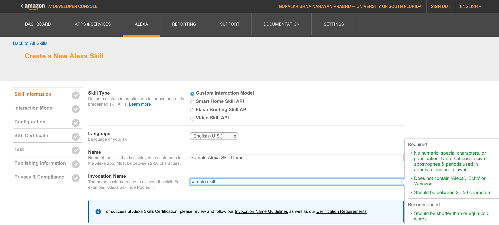
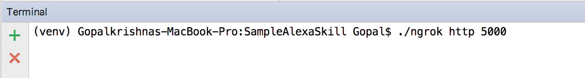

This assignment will get you started and exploring into developing an interactive skill for Amazon’s Alexa.
About Alexa:
Alexa is a cloud based intelligent personal assistant developed by Amazon and was initially launched for the Amazon Echo and later the Echo dot devices. Alexa is capable of playing music, setting to-do lists, fetching real-time information such as the weather and performing several other tasks by taking a users voice request. It can also be used to control smart devices.
Requirements for the assignment:
- Amazon AWS account.
- PyCharm IDE.
- awscli - command line tool for AWS console management.
- flask-ask - framework to build Alexa skill
- ngrok - command line tool for generating 'HTTPS' url of locally hosted apps.
- zappa - server Python framework to deploy Alexa skills as AWS lambda functions.
Assignment Task:
Build an Alexa skill which on launch will ask the user whether the he / she is ready to answer a basic mathematic question. If the user says "Sure", "Yes", "I'm ready" or "I am ready", then Alexa should ask a random math calulation question of two operands ( eg.: 2 + 3 ). The questions should include addition of two numbers, multiplication of two numbers or subtraction of two numbers. The numbers to operate on should be from 0 to 20. If the user fails to give the wrong answer, then Alexa should give an appropriate answer and give out the right answer.
Setup for building a sample Alexa skill:
1. Open Pycharm IDE and create a pure python project.
2. Go to the project settings and create a virtual environment to locally host the Alexa skill. Create the virtual environment directory in the PyCharm Project create and make sure you do not select the inherit global-site packages option.
3. Install the following packages to the PyCharm Project using the package installer:
- flask-ask
- awscli
- zappa
4. Download ngrok and place the unzipped ngrok command line tool in the PyCharm project. It is used to create a secure tunnel to the localhost on which the Flask-ask Alexa skill app is locally hosted and gives an "https" endpoint to configure the endpoint of the Alexa skill.
Building a sample Alexa skill:
1. Create a python file(eg. sampleAlexa.py). Import the required packages and initialise a Flask ask app.
2. Log in the dashboard of the Alexa developer console. Go to the Alexa tab and click on add a new skill.
3. The assignment is to build a custom interaction model. Give a name and also an Invocation name to the Alexa skill. The invocation name is the name the user will use to call the skill. Save these details and click on next to go to the interaction model.

4. In the Interaction model, the intent schema is where you can define the name of the Intents and also name and type of variables the Alexa skill intent will use. THe schema is wriiten in JSON format. Following is the Intent schema of the sample Alexa skill:
5. In the Interaction model, the sample utterances are the sample commands used to interact with the skill. The values in the brace are the variables which Alexa will pass to the functions that will be written in the python file in PyCharm.
6. Now in the python file on PyCharm, you can use the intents created to add functionality to them.
7. Add the main function to the python code which will run the flask ask app and save the python file.
samplealexa.py - Click to Download.
8. Run the python file in Pycharm. The PyCharm project will start be hosting on the localhost. Use the ngrok command from the PyCharm terminal to start get an "https" url for the tunnelled localhost.

9. Copy the url and paste it in the default for the service endpoint type "HTTPS". Select the "No" option for the "Provide geographical region endpoints?". Save the details and Click on next.
- Hint: For Mac operating systems, if the ngrok command is throwing certificate errors. Use the following command in the terminal of the project: /Applications/Python\ 3.6/Install\ Certificates.command
10. Select the option "My development endpoint is a sub-domain of a domain that has a wildcard certificate from a certificate authority" as the default certificate for the endpoint.
11. Now you can test the python skill locally hosted by typing in a sample utterance. You can even listen to Alexa's response for the sample utterance request by clicking on the button below the response.
12. Now we will be hosting the Alexa skill as a lamba function on the AWS console. In the PyCharm's terminal for the Project, use the command "zappa init" to create config files for the lamba function to be hosted. Use all the default options for the configuration questions asked.
13. Now to host the Alexa skill as a lamba funtion to the AWS server, use the "zappa deploy dev" command in the terminal. Note: "dev" is the default environment name used while creating the config file.

14. Once the Alexa skill is successfully deployed on the AWS server, you can use the lamba url as the Default endpoint url in step 9.
15. Login to Echosim.io with your AWS account to simulate the sample alexa skill. Following is the simulation of the Sample skill built:
Deliverables for the Assignment:
- Python file (eg.: samplealexa.py) and additional files such as YAML templates.
- Intent schema in a json file and name it "intent_" followed by name of the python file. (eg.: intent_samplealexa.json).
- Create a text file with name of python file.(eg.: samplealexa.txt).
- - Include the sample invocations.
- - Include the Lamba endpoint of the Alexa skill.
- - YouTube Url for the screengrab of the simulated Echosim.io for the Alexa skill developed for this assignment. Following is a example simulation video of the Alexa skill for the assignment:
Compress all the files in a zip and email the same to gprabhu@mail.usf.edu
Note: Mention email subject as - Grad Project: 'Student_UID', 'Student_Major'.